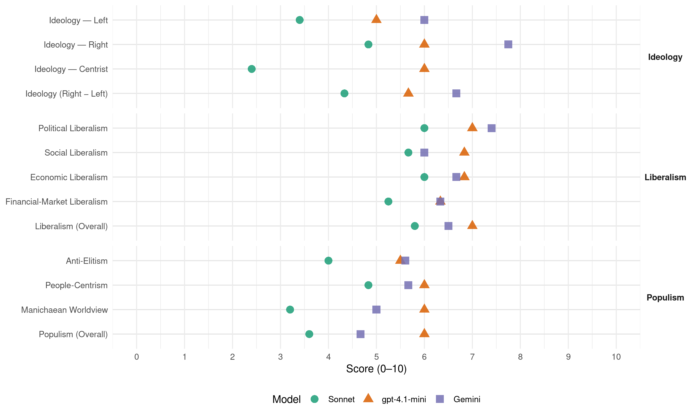

MHP (Turkey, 2015)
manifesto_id 74712_201506
Get full text: This site shows derived annotations and short verbatim quotes only. The full manifesto text is © Manifesto Project / WZB — obtain it via manifesto-project.wzb.eu using the manifesto_id above.
Headline scores
| Dimension | Sonnet | gpt-4.1-mini | Gemini |
|---|---|---|---|
| Populism (Overall) | 3.6 | 6.0 | 4.7 |
| Anti-Elitism | 4.0 | 5.5 | 5.6 |
| People-Centrism | 4.8 | 6.0 | 5.7 |
| Manichaean Worldview | 3.2 | 6.0 | 5.0 |
| Ideology (Right − Left) | 4.3 | 5.7 | 6.7 |
| Liberalism (Overall) | 5.8 | 7.0 | 6.5 |
| Political Liberalism | 6.0 | 7.0 | 7.4 |
| Social Liberalism | 5.7 | 6.8 | 6.0 |
| Economic Liberalism | 6.0 | 6.8 | 6.7 |
| Financial-Market Liberalism | 5.2 | 6.3 | 6.3 |
Evidence per dimension
Economic Liberalism
Gemini · score 7.0 · verified · chunk 1
“Serbest teşebbüsün esas olduğu, üretimin teşvik”
hedeflemektedir. Serbest teşebbüsün esas olduğu, üretimin teşvik edildiği, rekabetçi ve hakkaniyetli bir
Gemini · score 7.0 · verified · chunk 2
“Piyasa ekonomisi kurallarının işletilerek tekelci”
Piyasa ekonomisi kurallarının işletilerek tekelci oluşumların ve haksız rekabetin önlenmesi, kamunun ekonomideki rolünün
Gemini · score 8.0 · verified · chunk 3
“rekabetçi piyasaların oluşması sağlanacaktır”
Devlet tekellerinin yerini özel sektör tekellerinin almasını önleyecek piyasa düzenleyici çalışmalar etkinleştirilecek ve rekabetçi piyasaların oluşması sağlanacaktır.
Gemini · score 6.0 · verified · chunk 4
“Özel sektör için uygun yatırım ortamı”
altyapı ihtiyaçları süratle giderilecek ve Özel sektör için uygun yatırım ortamı oluşturulacaktır. Kırsal alandan büyük
Gemini · score 6.0 · verified · chunk 5
“Özel sağlık kurumları teşvik edilecek”
kamu yararı gözetilerek projeler gözden geçirilecektir. Özel sağlık kurumları teşvik edilecek, sağlık turizminin
Gemini · score 6.0 · verified · chunk 6
“yerli müteşebbisin d e silah ve askeri”
bağımsız ve yerli bir harp sanayinin gelişmesi ve yerli müteşebbisin d e silah ve askeri teçh izat üretimine yatırım yapması için gerek li teşvik ler sağlanacaktır.
gpt-4.1-mini · score 7.0 · verified · chunk 1
“Serbest teşebbüsün esas olduğu, üretimin teşvik edildiği, rekabetçi ve hakkaniyetli bir ekonomi politikasını savunmakta”
Serbest teşebbüsün esas olduğu, üretimin teşvik edildiği, rekabetçi ve hakkaniyetli bir ekonomi politikasını savunmakta, Türk girişimcisinin dünya ekonomisinde söz sahibi olabilmesi için Türk firma ve markalarının küresel düzeyde rekabet gücü kazanmasına stratejik bir önem atfetmekteyiz.
gpt-4.1-mini · score 7.0 · verified · chunk 2
“Piyasa ekon omisi kurallarının işletilerek tekelci oluşumların ve haksız reka betin önlenmesi”
Piyasa ekon omisi kurallarının işletilerek tekelci oluşumların ve haksız reka betin önlenmesi, kamunun ekon omid eki rolünün yol gös terici, düzenleyici ve d enetleyici faaliyetlerle sınırlandırılarak; özel sektör dinamizminin ve teşebbüs gücünün d es tek lendiği is tikrarlı, çevreye duyarlı ve is tihdam dos t u bir büyümenin gerçek leştiril mesi, ekon omi politikamızın esasını oluşt urmaktadır.
gpt-4.1-mini · score 7.0 · verified · chunk 3
“Üretimi, yatırımı ve etkin kaynak dağılımını sağlayan bir vergi sistemi kurulacak”
Vergiye ilişkin düzenlemelerde, kamu finansmanıyla ilgili önceliklerin yanı sıra verginin üretim ve istihdam üzerindeki etkileri ile sosyal yönü birlikte değerlendirilecektir. Üretimi, yatırımı ve etkin kaynak dağılımını sağlayan bir vergi sistemi kurulacak.
gpt-4.1-mini · score 7.0 · verified · chunk 4
“serbest piyasa, rekabet, işletme, vergi, ticaret, özelleştirme”
… ekonomik politikalar serbest piyasa, rekabet, işletme, vergi, ticaret, özelleştirme üzerine…
gpt-4.1-mini · score 7.0 · verified · chunk 5
“serbest piyasa ekonomisi”
Ekonomik büyümenin sağlandığı refah artışı emekli aylıklarına yansıtılacaktır.
gpt-4.1-mini · score 6.0 · verified · chunk 6
“ekonomik ve sosyal kalkınma programı”
Terörle mücadelede teknolojik imkânlardan en ileri düzeyde yararlanılacak ve istihbarat ağının güçlendirilmesi sağlanacaktır. Terörle mücadele, güvenlik birimlerinin yürüttüğü mücadelenin yanı sıra, istismar edilen ve bu nedenle terörü besleyen unsurların ortadan kaldırılmasına dönük olarak ekonomik, sosyal, psikolojik, idari, demografik ve kültürel etkenlerin ortadan kaldırılması temelinde yürütülecektir. Bu amaçla, geniş kapsamlı bir ekonomik ve sosyal kalkınma programı, gerekli mali destek ve kaynaklarla uygulamaya konulacaktır.
Sonnet · score 6.0 · verified · chunk 1
“Rekabetçi piyasa ekonomisini ve serbest teşebbüsü esas alan”
Rekabetçi piyasa ekonomisini ve serbest teşebbüsü esas alan, kaynakların rasyonel kullanıldığı, bir ekonomik düzen oluşturmak
Sonnet · score 6.0 · verified · chunk 2
“Rekabetçi piyasa ekonomisi geliştirilecek”
Rekabetçi piyasa ekonomisi geliştirilecek ve hukuki alt yapısı güçlendirilecektir. Rekabetin Korunması Hakkında Kanun geliştirilerek günümüz şartlarına uygun, yenilikçi ve etkili bir mevzuat oluşturulacak
Sonnet · score 7.0 · verified · chunk 3
“rekabetçi piyasaların oluşması sağlanacaktır”
Devlet tekellerinin yerini özel sektör tekellerinin almasını önleyecek piyasa düzenleyici çalışmalar etkinleştirilecek ve rekabetçi piyasaların oluşması sağlanacaktır.
Sonnet · score 5.0 · mixed · chunk 4
“özel sektörün güçlendirilmesi, girişimcilik ve rekabet”
Özel sektörün güçlendirilmesi, girişimcilik ve rekabet ruhunun geliştirilmesi, bölgesel ve makro politikaların ahenk içinde yürütülmesi suretiyle yerel kalkınmanın gerçekleştirilebilmesi için
Sonnet · score 5.0 · mixed · chunk 5
“özel sektörün imkânlarından da azami ölçüde istifade edilecektir”
Fiziki mekan, insan gücü ve program imkanları geliştirilerek 4-5 yaş gurubunu kapsayan okul öncesi eğitim kademesinde yüzde yüz okullaşmanın temini için özel sektörün imkânlarından da azami ölçüde istifade edilecektir.
Sonnet · score 5.0 · verified · chunk 6
“kamu ve özel sektör işbirliği ile”
Kamu ve özel alari işbirliği ile yeni bir Turizm Strateji Belgesi ve Turizm Eylem Planı hazırlanacak ve uygulamaya konulacaktır
Financial-Market Liberalism
Gemini · score 6.0 · verified · chunk 2
“Mali sistem ve sermaye piyasaları”
Mali sistem ve sermaye piyasaları güçlendirilecek ve küçük yatırımcı korunacaktır.
Gemini · score 8.0 · verified · chunk 3
“şeffaf ve güvenli bir bankacılık sistemi”
Tasarruf sahipleri ve kredi kullananlar için şeffaf ve güvenli bir bankacılık sistemi oluşturulacaktır.
Gemini · score 5.0 · verified · chunk 4
“Bankacılık kesiminin reel sektöre mali kaynak”
mensubiyet bilinci oluşturulacaktır. Bankacılık kesiminin reel sektöre mali kaynak yönünden sürekli destek verebilir hale getirilmesi
gpt-4.1-mini · score 6.0 · verified · chunk 1
“Devletin düzenleme, gözetim ve denetleme fonksiyonları geliştirilecek, yerel yönetimler hizmet bakımından güçlendirilecek ve hür bir medya ve sivil toplum kuruluşları yapısı oluşturulacaktır”
Ayrıca, devletin düzenleme, gözetim ve denetleme fonksiyonları geliştirilecek, yerel yönetimler hizmet bakımından güçlendirilecek ve hür bir medya ve sivil toplum kuruluşları yapısı oluşturulacaktır.
gpt-4.1-mini · score 6.0 · verified · chunk 2
“Mali sis tem ve sermaye piyasaları güçlendirilecek ve küçük yatırımcı korunacaktır”
Mali sis tem ve sermaye piyasaları güçlendirilecek ve küçük yatırımcı korunacaktır. Bankacılık sis temine yönelik düzenlemeler, müşteri odak lı olacaktır.
gpt-4.1-mini · score 7.0 · verified · chunk 3
“Mali piyasalarda Ar-Ge faaliyetleri desteklenecek, mobil bankacılık ve internet bankacılığı yaygınlaştırılacaktır”
Mali piyasalarda Ar-Ge faaliyetleri desteklenecek, mobil bankacılık ve internet bankacılığı yaygınlaştırılacaktır. Mali sektörde çevre ülkelerle işbirliği geliştirilecektir.
Sonnet · score 5.0 · verified · chunk 1
“Sıcak para akışına dayalı ve üretmekten çok tüketmeye”
Sıcak para akışına dayalı ve üretmekten çok tüketmeye, bilgi ve teknoloji yoğun, rekabetçi yatırımlar yerine hizmet sektörüne dönük yatırımlara ve rant ekonomisine dayalı yaklaşımlar sürdürülebilir olmadığı gibi, Türkiye ekonomisinin geleceği için de önemli bir risk faktörü oluşturmaktadır.
Sonnet · score 6.0 · verified · chunk 2
“Mali sistem ve sermaye piyasaları güçlendirilecek”
Mali sistem ve sermaye piyasaları güçlendirilecek ve küçük yatırımcı korunacaktır. Bankacılık sistemine yönelik düzenlemeler, müşteri odaklı olacaktır
Sonnet · score 6.0 · mixed · chunk 3
“etkin bir biçimde denetlenen, yenilikçi ve şeffaf işleyen bir mali piyasa yapısı”
işlem maliyetlerinin düşük olduğu, güçlü bir teknolojik ve beşeri altyapıya sahip, etkin bir biçimde denetlenen, yenilikçi ve şeffaf işleyen bir mali piyasa yapısı hedeflenmektedir.
Sonnet · score 5.0 · verified · chunk 4
“vadeli işlem borsaları etkinleştirilecek”
Tarım ürünlerinde fiyat istikrarının sağlanmasında önemli bir araç olan vadeli işlem borsaları etkinleştirilecek, ürün borsaları geliştirilecek
Sonnet · score 5.0 · verified · chunk 5
“tamamlayıcı emeklilik sistemlerinin yaygınlaştırılması”
Tamamlayıcı emeklilik sistemlerinin yaygınlaştırılması, zorunlu ya da isteğe bağlı mesleki emeklilik sistemlerinin hayata geçirilmesi hem kamu üzerindeki yükün azaltılabilmesi hem de kişilerin emeklilik dönemi tasarruflarının artırılması açısından yeni bir politika seçeneği olarak değerlendirilecektir.
Political Liberalism
Gemini · score 8.0 · verified · chunk 1
“kuvvetler ayrılığı ilkesinin gerekleri tesis edilecek”
tahribat onarılacak, kuvvetler ayrılığı ilkesinin gerekleri tesis edilecek, korku ve şüphe gibi travmalar
Gemini · score 8.0 · verified · chunk 2
“yargı mercileri önünde adil yargılanma”
Herkesin, meşru vasıta ve yollardan faydalanmak suretiyle yargı mercileri önünde adil yargılanma hakkına sahip olduğuna
Gemini · score 7.0 · verified · chunk 3
“bilgi edinme ve gerektiğinde hesap sorma”
Bilgi edinme hakkı ve şeffaflık kapsamında kişi ve kurumların ödedikleri vergilerin nereye ve nasıl harcandığı hususunda bilgi edinme ve gerektiğinde hesap sorma imkânına kavuşması sağlanacak
Gemini · score 7.0 · verified · chunk 5
“Yükseköğretim sistemi daha demokratik ve”
Yükseköğretim sistemi daha demokratik ve üretken bir yapıya kavuşturulacak, öğrenci,
Gemini · score 7.0 · verified · chunk 6
“mücad ele hukuk d evletinin yöntemleriyle kararlı”
Terörle mücad ele sırasında haksızla hak lı, suçsuzla suçlu ayırt edilecek ve mücad ele hukuk d evletinin yöntemleriyle kararlı bir şekild e sürdürülecektir.
gpt-4.1-mini · score 8.0 · verified · chunk 1
“Hukukun üstünlüğünü ve adaleti her alanda hâkim kılmak, Anayasanın ilk üç maddesinde anlam bulan esasları güçlendirecek, özgürlükleri esas alacak ve demokratik standartları yükseltecek”
Milliyetçi Hareket Partisi’nin güçlü iktidarında hedefimiz; Hukukun üstünlüğünü ve adaleti her alanda hâkim kılmak, Anayasanın ilk üç maddesinde anlam bulan esasları güçlendirecek, özgürlükleri esas alacak ve demokratik standartları yükseltecek “toplum sözleşmesi niteliğinde” bir anayasa yapmak,
gpt-4.1-mini · score 7.0 · verified · chunk 2
“yargı bağımsızlığı tesis edilecek, h içbir kimse ya da organ yargı d enetimi dışında bırakıl mayacaktır”
Hiçbir organ, makam, merci, kişi ve baskı gurubuna ayrıcalık tanınmayacak biçimd e yargı bağımsızlığı tesis edilecek, h içbir kimse ya da organ yargı d enetimi dışında bırakıl mayacaktır.
gpt-4.1-mini · score 7.0 · verified · chunk 3
“hukuki düzenlemeler yapılacak, gözetim ve denetim sistemleri uluslararası standartlara uygun hale getirilerek etkin işlemesi sağlanacaktır”
Finansal sistemin işlevlerini yerine getirebilmesi için; ülke şartları ve uluslararası standartlar dikkate alınarak hukuki düzenlemeler yapılacak, gözetim ve denetim sistemleri uluslararası standartlara uygun hale getirilerek etkin işlemesi sağlanacaktır.
gpt-4.1-mini · score 6.0 · verified · chunk 4
“demokrasi, haklar, seçimler, mahkemeler, medya”
… siyasi kurumlar olarak demokrasi, haklar, seçimler, mahkemeler, medya ve hükümet…
gpt-4.1-mini · score 6.0 · verified · chunk 5
“demokratik leştirilecek”
Yükseköğretim sis temi daha demokratikleştirilecek, öğrenci, kurum ve akad emik kadrolar arasında gerek li iş birliği ve uyum sağlanacaktır.
gpt-4.1-mini · score 8.0 · verified · chunk 6
“demokrasi, insan hakları ve hukukun üstünlüğü”
Demokrasi, insan hakları ve hukukun üstünlüğü gibi kavramlarla milli ve manevi değerlerimizin istismar edilerek devletin ve milletin yararına olmayan işler için kılıf yapılmasına fırsat verilmeyecek, bu yönlü her girişim karşısında Partimiz; milletin huzur ve refahı ile devletin ve milletin bekası için her zaman, her yerde ve kiminle ilgili olursa olsun doğru bilgileri paylaşarak vatandaşlarımızın yol göstericisi olacaktır.
Sonnet · score 7.0 · verified · chunk 1
“kuvvetler ayrılığı ilkesinin gerekleri tesis edilecek”
AKP’nin devletin kurumları, milli ve manevi değerlerimiz ile vatandaşlar üzerinde oluşturduğu her türlü tahribat onarılacak, kuvvetler ayrılığı ilkesinin gerekleri tesis edilecek, korku ve şüphe gibi travmalar toplum üzerinden kaldırılacaktır.
Sonnet · score 6.0 · verified · chunk 2
“yargı bağımsızlığı tesis edilecek”
Hiçbir organ, makam, merci, kişi ve baskı gurubuna ayrıcalık tanınmayacak biçimde yargı bağımsızlığı tesis edilecek, hiçbir kimse ya da organ yargı denetimi dışında bırakılmayacaktır
Sonnet · score 6.0 · verified · chunk 3
“şeffaf ve hesap verilebilir bir borçlanma politikası”
para ve maliye politikalarıyla uyumlu, sürdürülebilir, şeffaf ve hesap verilebilir bir borçlanma politikası izlenecektir.
Sonnet · score 5.0 · verified · chunk 4
“sivil toplum kuruluşlarının birlikte çalışmasını sağlayacak”
ilgili kamu kurumları, üniversiteler, meslek kuruluşları, sanayi ve ticaret odaları ve sivil toplum kuruluşlarının birlikte çalışmasını sağlayacak ‘il yatırım ve kalkınma ofisleri’ kurulacaktır.
Sonnet · score 6.0 · verified · chunk 5
“yükseköğretim sistemi demokratikleştirilecek”
Yükseköğretim sistemi daha demokratik ve üretken bir yapıya kavuşturulacak, öğrenci, kurum ve akademik kadrolar arasında gerekli iş birliği ve uyum sağlanacaktır. Üniversiteler idari ve mali açıdan özerk ve hesap verebilir hale getirilecektir.
Sonnet · score 6.0 · verified · chunk 6
“demokratik standartların yükseltilmesini”
Türkiye merkezli medeniyet projesi; dünyada demokratik standartların yükseltilmesini, refahın artırılmasını, insan hak ve hürriyetlerinin teminat altına alınmasını, adaletin hakim kılınmasını
Liberalism (Overall)
Gemini · score 6.0 · verified · chunk 1
“kuvvetler ayrılığı ilkesinin gerekleri tesis edilecek”
tahribat onarılacak, kuvvetler ayrılığı ilkesinin gerekleri tesis edilecek, korku ve şüphe gibi travmalar
Gemini · score 6.0 · verified · chunk 2
“yargı mercileri önünde adil yargılanma”
Herkesin, meşru vasıta ve yollardan faydalanmak suretiyle yargı mercileri önünde adil yargılanma hakkına sahip olduğuna
Gemini · score 8.0 · verified · chunk 3
“rekabetçi piyasaların oluşması sağlanacaktır”
Devlet tekellerinin yerini özel sektör tekellerinin almasını önleyecek piyasa düzenleyici çalışmalar etkinleştirilecek ve rekabetçi piyasaların oluşması sağlanacaktır.
Gemini · score 6.0 · verified · chunk 4
“Özel sektör için uygun yatırım ortamı”
altyapı ihtiyaçları süratle giderilecek ve Özel sektör için uygun yatırım ortamı oluşturulacaktır. Kırsal alandan büyük
Gemini · score 7.0 · verified · chunk 5
“Toplumsal cinsiyet eşitliği politikalara yerleştirilecek”
Toplumsal cinsiyet eşitliği politikalara yerleştirilecek, politika süreçlerinin tüm evrelerinde ve düzeylerinde
Gemini · score 6.0 · verified · chunk 6
“mücad ele hukuk d evletinin yöntemleriyle kararlı”
Terörle mücad ele sırasında haksızla hak lı, suçsuzla suçlu ayırt edilecek ve mücad ele hukuk d evletinin yöntemleriyle kararlı bir şekild e sürdürülecektir.
gpt-4.1-mini · score 7.0 · verified · chunk 1
“Hukukun üstünlüğünü ve adaleti her alanda hâkim kılmak, Anayasanın ilk üç maddesinde anlam bulan esasları güçlendirecek, özgürlükleri esas alacak ve demokratik standartları yükseltecek”
Milliyetçi Hareket Partisi’nin güçlü iktidarında hedefimiz; Hukukun üstünlüğünü ve adaleti her alanda hâkim kılmak, Anayasanın ilk üç maddesinde anlam bulan esasları güçlendirecek, özgürlükleri esas alacak ve demokratik standartları yükseltecek “toplum sözleşmesi niteliğinde” bir anayasa yapmak,
gpt-4.1-mini · score 7.0 · verified · chunk 2
“yargı bağımsızlığı tesis edilecek, h içbir kimse ya da organ yargı d enetimi dışında bırakıl mayacaktır”
Hiçbir organ, makam, merci, kişi ve baskı gurubuna ayrıcalık tanınmayacak biçimd e yargı bağımsızlığı tesis edilecek, h içbir kimse ya da organ yargı d enetimi dışında bırakıl mayacaktır.
gpt-4.1-mini · score 7.0 · verified · chunk 3
“hukuki düzenlemeler yapılacak, gözetim ve denetim sistemleri uluslararası standartlara uygun hale getirilerek etkin işlemesi sağlanacaktır”
Finansal sistemin işlevlerini yerine getirebilmesi için; ülke şartları ve uluslararası standartlar dikkate alınarak hukuki düzenlemeler yapılacak, gözetim ve denetim sistemleri uluslararası standartlara uygun hale getirilerek etkin işlemesi sağlanacaktır.
gpt-4.1-mini · score 7.0 · verified · chunk 4
“serbest piyasa, rekabet, işletme, vergi, ticaret, özelleştirme”
… ekonomik politikalar serbest piyasa, rekabet, işletme, vergi, ticaret, özelleştirme üzerine…
gpt-4.1-mini · score 7.0 · verified · chunk 5
“Toplumsal cinsiyet eşitliği politikalarına önem verilecek”
Toplumsal cinsiyet eşitliği politikalarına yerleştirilecek, politika süreçlerinin tüm evrelerinde ve düzeylerinde erkeklerle kadınlar arasındaki eşitlik prensibi dikkate alınacaktır.
gpt-4.1-mini · score 7.0 · verified · chunk 6
“demokrasi, insan hakları ve hukukun üstünlüğü”
Demokrasi, insan hakları ve hukukun üstünlüğü gibi kavramlarla milli ve manevi değerlerimizin istismar edilerek devletin ve milletin yararına olmayan işler için kılıf yapılmasına fırsat verilmeyecek, bu yönlü her girişim karşısında Partimiz; milletin huzur ve refahı ile devletin ve milletin bekası için her zaman, her yerde ve kiminle ilgili olursa olsun doğru bilgileri paylaşarak vatandaşlarımızın yol göstericisi olacaktır.
Sonnet · score 6.0 · verified · chunk 1
“hukukun üstünlüğü prensibi hâkim kılınacak”
İnsanlarımızın adaletli ve hakkaniyetli bir sosyal düzen içerisinde yaşaması sağlanacak, hukukun üstünlüğü prensibi hâkim kılınacak, temel hak ve özgürlükler güvence altına alınacaktır.
Sonnet · score 6.0 · verified · chunk 2
“hukukun üstünlüğü prensibi hâkim kılınacak”
hukukun üstünlüğü prensibi hâkim kılınacak, temel hak ve özgürlükler güvence altına alınacaktır
Sonnet · score 6.0 · verified · chunk 3
“rekabetçi piyasaların oluşması sağlanacaktır”
Devlet tekellerinin yerini özel sektör tekellerinin almasını önleyecek piyasa düzenleyici çalışmalar etkinleştirilecek ve rekabetçi piyasaların oluşması sağlanacaktır.
Sonnet · score 5.0 · verified · chunk 4
“rekabet sağlanarak tekelci oluşumların önlenmesi”
Ekonomide rekabet sağlanarak tekelci oluşumların önlenmesi, istihdam yaratılması, gelir dağılımındaki dengesizliklerin giderilmesi… amacıyla esnaf ve sanatkâr kesiminin faaliyetleri desteklenecektir.
Sonnet · score 6.0 · verified · chunk 5
“kadınlara karşı uygulanan her türlü fiili ve hukuki ayrımcılığa son verilecektir”
Kadınlara karşı uygulanan her türlü fiili ve hukuki ayrımcılığa son verilecektir. Başta aile içinden gelenler olmak üzere kadına yönelik şiddet konusunda toplumsal farkındalık güçlendirilecektir.
Sonnet · score 5.0 · mixed · chunk 6
“hukukun üstünlüğü ve insan haklarını esas alan”
milli ve manevi değerler, çağdaş demokratik ilkeler, hukukun üstünlüğü ve insan haklarını esas alan kural, kurum ve ‘yönetim üslubu’ olacaktır
Anti-Elitism
Gemini · score 8.0 · verified · chunk 1
“liyakatsiz ve basiretsiz AKP hükümetlerinin idaresinde”
meşruiyetini başka mahfillerde arayan, liyakatsiz ve basiretsiz AKP hükümetlerinin idaresinde, başta Büyük Ortadoğu Projesi
Gemini · score 7.0 · verified · chunk 2
“yolsuzluk ve usulsüzlüğü teşvik eden”
Cumhuriyetin temel niteliklerini tahrip eden, Türkiye’nin ülkesi ve milletiyle bölünmezliğini tehdit eden, yolsuzluk ve usulsüzlüğü teşvik eden yasal ve idari düzenlemeler kaldırılacak
Gemini · score 5.0 · verified · chunk 3
“siyasi rant yaratmaya ve gösterişe yönelik”
Ana planlarda yer alan öncelikler ile uyumlu olmayan siyasi rant yaratmaya ve gösterişe yönelik, gerçekçilikten uzak projeler gündeme getirilmeyecektir.
Gemini · score 3.0 · verified · chunk 5
“kayırma, denetimin etkin olmayışı”
İş kazalarının altında yatan kayırma, denetimin etkin olmayışı ve gerekli güvenlik tedbirlerinin alınmamasına dönük
Gemini · score 5.0 · verified · chunk 6
“halka teped en bakan çağ dışı anlayışa”
kamu görevlilerinin vatandaşı azarladığı, kötü muameled e bulunduğu, çirkin sözler sarf ettiği halka teped en bakan çağ dışı anlayışa son verilecek
gpt-4.1-mini · score 8.0 · verified · chunk 1
“AKP hükümetlerinin idaresinde, başta Büyük Ortadoğu Projesi olmak üzere emperyalist projelerin taşeronu olma zilletine düşürülmüş”
Türkiye meşruiyetini başka mahfillerde arayan, liyakatsiz ve basiretsiz AKP hükümetlerinin idaresinde, başta Büyük Ortadoğu Projesi olmak üzere emperyalist projelerin taşeronu olma zilletine düşürülmüş, kan, gözyaşı ve katliamlara ortak edilmiştir.
gpt-4.1-mini · score 3.0 · verified · chunk 2
“yolsuzluk yapanların bağımsız Türk adaleti önünd e hesap vermesi sağlanacaktır”
yolsuzluk yapanların bağımsız Türk adaleti önünd e hesap vermesi sağlanacaktır. “17-25 Aralık rüşvet, yolsuzluk ve kara para” soruşt urması ile ortaya dökülen, hükümet üyeleri ile aile fertlerinin içind e yer aldığı siyasi tarih imizin en büyük rüşvet ve yolsuzluk iddiaları başta ol mak üzere tüm yolsuzluk ların üzerine titizlik le gidilecek
Sonnet · score 8.0 · verified · chunk 1
“liyakatsiz ve basiretsiz AKP hükümetlerinin idaresinde”
Türkiye meşruiyetini başka mahfillerde arayan, liyakatsiz ve basiretsiz AKP hükümetlerinin idaresinde, başta Büyük Ortadoğu Projesi olmak üzere emperyalist projelerin taşeronu olma zilletine düşürülmüş
Sonnet · score 4.0 · verified · chunk 2
“yolsuzluk yapanlar ve yolsuzluğu doğuran unsurlarla”
yolsuzluğa karşı köklü ve kalıcı tedbirler alınacak, yolsuzluk yapanlar ve yolsuzluğu doğuran unsurlarla etkili bir mücadele yürütülecektir
Sonnet · score 2.0 · verified · chunk 3
“siyasi telkin, siyasi kadrolaşma ve siyasi gelecek beklentilerinden”
Gelir idaresi modern ve teknolojik bir yapıya kavuşturulacak; siyasi telkin, siyasi kadrolaşma ve siyasi gelecek beklentilerinden ayrıştırılarak liyakati esas alan bir yapı içerisinde yenilenecektir.
Sonnet · score 3.0 · verified · chunk 4
“rant ekonomisinden üretim ekonomisine geçilecek”
İşsizlikle mücadelenin esasını… rant ekonomisinden yatırım-üretim-istihdamı sürekli artırmayı öngören üretim ekonomisine geçilecektir.
Sonnet · score 3.0 · verified · chunk 5
“imar rantının peşkeş çekil mesine son verilecek”
İmar yetkisinin, şehir rantları oluşturmaya ve kamu kaynaklarını peşkeş çekmeye fırsat verecek şekilde kullanılması önlenecektir.
Sonnet · score 3.0 · mixed · chunk 6
“kamuoyunu yanıltma işlevi gören medya”
bağımsızlığı, tarafsızlığı ve etik ilkeleri bir yana bırakarak yalan gündemler belirleme, baskı oluşturma ve kamuoyunu yanıltma işlevi gören medya ve diğer iletişim araçlarının bilgilendirme anlayışı tüm unsurlarıyla bertaraf edilecektir
Ideology — Centrist
gpt-4.1-mini · score 7.0 · verified · chunk 1
“Milliyetçi Hareket Partisi, siyasette “toplumsal merkezi” hem inşa hem de temsil iddiasını taşımaktadır”
Gücünü mukaddesattan, inançlarından, ilkelerinden ve Türk milletinden alan Milliyetçi Hareket Partisi, siyasette “toplumsal merkezi” hem inşa hem de temsil iddiasını taşımaktadır.
gpt-4.1-mini · score 5.0 · verified · chunk 2
“Milliyetçi Hareket Partisi, çağdaş n ormlarda bir Anayasa için mümkün ola bildiğince geniş bir uzlaşma ile to plumun tamamının bek lentilerini dikkate alan geniş bir vizyonla”
Milliyetçi Hareket Partisi, çağdaş n ormlarda bir Anayasa için mümkün ola bildiğince geniş bir uzlaşma ile to plumun tamamının bek lentilerini dikkate alan geniş bir vizyonla, fark lı görüş ve düşüncelere saygı gös teren bir anlayışla, herkesin katkısının sağlanacağı uzlaşma arayışıyla ve ahlaka uygun yöntemlerle yapıl masını gerek li görmektedir.
Sonnet · score 3.0 · verified · chunk 1
“toplumsal merkezi hem inşa hem de temsil”
Milliyetçi Hareket Partisi, siyasette ‘toplumsal merkezi’ hem inşa hem de temsil iddiasını taşımaktadır.
Sonnet · score 2.0 · verified · chunk 2
“toplumun tamamının beklentilerini dikkate alan”
toplumun tamamının beklentilerini dikkate alan geniş bir vizyonla, farklı görüş ve düşüncelere saygı gösteren bir anlayışla
Sonnet · score 2.0 · verified · chunk 3
“toplumun topyekûn üretime katılması”
Toplumun topyekûn üretime katılması, katıldığı oranda üretimden pay alması ve ‘ortaklık’ anlayışına dayanan ‘katılımcı kalkınma’ ile doğal ve beşeri kaynakların harekete geçirilmesi sağlanacaktır.
Sonnet · score 3.0 · verified · chunk 4
“devlet-millet işbirliği içinde uygulamaya konulacak”
hedef alt sektörler somut olarak belirlenecek, devlet-millet işbirliği içinde uygulamaya konulacak projelere destek verilecektir.
Sonnet · score 2.0 · verified · chunk 5
“çağdaş normlarda sosyal sigorta sistemi tesis edilecek”
Vatandaşların geleceğinden emin olması ve yüksek standartlı bir hayat sürmesi için, bütün nüfusu kapsayacak şekilde nimet-külfet esasına göre işleyen çağdaş normlarda sosyal sigorta sistemi oluşturulacaktır.
Sonnet · score 2.0 · mixed · chunk 6
“onurlu, basiretli, şahsiyetli ve çok yönlü”
Bu kapsamda onurlu, basiretli, şahsiyetli ve çok yönlü bir dış politika izlenecektir
Ideology — Left
Gemini · score 6.0 · verified · chunk 3
“dar gelirlilerin vergi yükü hafifletilerek”
Vergi gelirleri içindeki dolaylı vergilerin payının azaltılması suretiyle dar gelirlilerin vergi yükü hafifletilerek vergide adalet sağlanacaktır.
Gemini · score 6.0 · verified · chunk 4
“yoksul kesimin vergi yükü hafifletilecek”
Vergi tabana yayılacak, yoksul kesimin vergi yükü hafifletilecek, uygulanacak transfer politikalarıyla yoksul
gpt-4.1-mini · score 6.0 · verified · chunk 1
“işsizlik, yoksulluk, gelir dağılımındaki adaletsizlik”
İşsizlik, yoksulluk, gelir dağılımındaki adaletsizlik, eğitim sistemindeki çarpıklıklar ve sosyal güvenlik sistemindeki yetersizlikler ile her alanda yaşanan yozlaşma ve yolsuzluk, Türkiye’nin önünde duran ve köklü temelleri bulunan başlıca sosyo-ekonomik sorunlardır.
gpt-4.1-mini · score 4.0 · verified · chunk 2
“sosyal adalet ve adil gelir dağılımı”
Sosyal adalet ve adil gelir dağılımı İs tikrarlı ekon omik büyümenin sağlanması ve güçlü bir üretim ekon omisinin tesisi suretiyle; üreten, is tihdam yaratan ve üretilen d eğerd en bu süreçte yer alan her kesimin katkısı ölçüsünd e adil pay al masını sağlayan, yoksulu gözeten, gelir dağılımını adaletli kılan bir sosyal re fah düzeni oluşt urmak temel hed e fimizdir.
Sonnet · score 2.0 · verified · chunk 1
“gelir dağılımındaki adaletsizliği gidermek”
Orta vadeli hedeflerimiz çerçevesinde: Gelir dağılımındaki adaletsizliği gidermek, sosyal güvenlik ve sosyal adaleti bütün icaplarıyla tesis etmek, işsizlik ve yoksulluğu ortadan kaldırmak
Sonnet · score 3.0 · verified · chunk 2
“gelir dağılımını adaletli kılan bir sosyal refah düzeni”
yoksulu gözeten, gelir dağılımını adaletli kılan bir sosyal refah düzeni oluşturmak temel hedefimizdir
Sonnet · score 3.0 · verified · chunk 3
“dar gelirlilerin vergi yükü hafifletilerek vergide adalet sağlanacaktır”
Vergi gelirleri içindeki dolaylı vergilerin payının azaltılması suretiyle dar gelirlilerin vergi yükü hafifletilerek vergide adalet sağlanacaktır.
Sonnet · score 5.0 · verified · chunk 4
“net asgari ücret 1400 liraya çıkarılacak”
Net asgari ücret, asgari geçim standardı düzeyi dikkate alınarak 1400 liraya yükseltilecektir.
Sonnet · score 4.0 · verified · chunk 5
“net asgari ücret 1400 liraya çıkarılacak”
Net asgari ücret, asgari geçim standardı düzeyi dikkate alınarak 1400 liraya yükseltilecektir. Asgari ücretten vergi alınmayacak, ücretlilerin asgari ücret kadar geliri vergi dışı bırakılacaktır.
Sonnet · score 1.0 · mixed · chunk 6
“yoksulluğun kökünün kazınmasını”
refahın artırılmasını, insan hak ve hürriyetlerinin teminat altına alınmasını, adaletin hakim kılınmasını, barış ve huzurun tesis edilmesini, çatışma ve gerilimlerin yok edilmesini, yoksulluğun kökünün kazınmasını
Ideology (Right − Left)
Gemini · score 9.0 · verified · chunk 1
“Türk milletini etnik gruplara göre sınıflandırma”
sağlanmalıdır. Türk milletini etnik gruplara göre sınıflandırma gafletinden behemehâl vazgeçilmelidir. Türkiye’nin
Gemini · score 8.0 · verified · chunk 2
“Türk milli kimliği, demokratik rejim”
Cumhuriyetin temel nitelikleri, Türk milli kimliği, demokratik rejim ve temel insan hakları gibi değerleri vazgeçilmez olarak kabul eder
Gemini · score 5.0 · verified · chunk 3
“dar gelirlilerin vergi yükü hafifletilerek”
Vergi gelirleri içindeki dolaylı vergilerin payının azaltılması suretiyle dar gelirlilerin vergi yükü hafifletilerek vergide adalet sağlanacaktır.
Gemini · score 5.0 · verified · chunk 4
“yoksul kesimin vergi yükü hafifletilecek”
Vergi tabana yayılacak, yoksul kesimin vergi yükü hafifletilecek, uygulanacak transfer politikalarıyla yoksul
Gemini · score 5.0 · verified · chunk 5
“Türk milletinin birliğini ve beraberliğini”
Milliyetçi Hareket Partisi; Türk milletinin birliğini ve beraberliğini koruyarak, toplumsal huzursuzluk alanlarının
Gemini · score 8.0 · verified · chunk 6
“tarih, kültür, inanç ve millî menfaatlerimizle”
çevre konusuna bilimi ve ak lı esas alan, tarih, kültür, inanç ve millî menfaatlerimizle çatışmayan bir bakış açısıyla yaklaşılacaktır.
gpt-4.1-mini · score 7.0 · verified · chunk 1
“Milliyetçi Hareket Partisi, siyasette “toplumsal merkezi” hem inşa hem de temsil iddiasını taşımaktadır”
Gücünü mukaddesattan, inançlarından, ilkelerinden ve Türk milletinden alan Milliyetçi Hareket Partisi, siyasette “toplumsal merkezi” hem inşa hem de temsil iddiasını taşımaktadır.
gpt-4.1-mini · score 5.0 · verified · chunk 2
“Milliyetçi Hareket Partisi; Cumhuriyetin temel nitelik leri, Türk milli kimliği, d emokratik rejim ve temel insan hak ları gibi d eğerleri vazgeçilmez olarak ka bul ed er”
Milliyetçi Hareket Partisi; Cumhuriyetin temel nitelik leri, Türk milli kimliği, d emokratik rejim ve temel insan hak ları gibi d eğerleri vazgeçilmez olarak ka bul ed er ve bunların uzlaşma arayışı içind e tartışıl masını redd ed er.
gpt-4.1-mini · score 5.0 · verified · chunk 6
“Milliyetçi Hareket’in uzun vadeli Türkiye vizyonuna ulaşma yolunda tek başına iktidarı hedef alan”
Milliyetçi Hareket’in uzun vadeli Türkiye vizyonuna ulaşma yolunda tek başına iktidarı hedef alan; “Toplumsal Onarımı ve Huzurlu Geleceği” tesis etmeye dönük “Seçim Beyannamesi”, Türk milletinin sağduyusuna takdim edilmekte
Sonnet · score 7.0 · verified · chunk 1
“Türk-İslam medeniyetinin temsil ettiği ruhu ve kök değerleri”
Bize göre Türk-İslam medeniyetinin temsil ettiği ruhu ve kök değerleri bugün yeni bir başlangıç noktası yapmak, Türkiye’yi içinde bulunduğu kafa karışıklığından ve kısır döngüden çıkaracağı gibi mazlum milletler için de bir umut ışığı olacaktır.
Sonnet · score 4.0 · verified · chunk 2
“Türk milli kimliği, demokratik rejim”
Cumhuriyetin temel nitelikleri, Türk milli kimliği, demokratik rejim ve temel insan hakları gibi değerleri vazgeçilmez olarak kabul eder
Sonnet · score 2.0 · verified · chunk 3
“dar gelirlilerin vergi yükü hafifletilerek vergide adalet sağlanacaktır”
Vergi gelirleri içindeki dolaylı vergilerin payının azaltılması suretiyle dar gelirlilerin vergi yükü hafifletilerek vergide adalet sağlanacaktır.
Sonnet · score 4.0 · verified · chunk 4
“net asgari ücret 1400 liraya çıkarılacak”
Net asgari ücret, asgari geçim standardı düzeyi dikkate alınarak 1400 liraya yükseltilecektir.
Sonnet · score 4.0 · verified · chunk 5
“millî ve manevî değerlerin korunması”
Millî ve manevî değerlerin korunması, yaşatılması ve gelecek kuşaklara aktarılmasında; millî bütünlüğün ve dayanışmanın pekiştirilmesinde aile kurumu büyük önem arz etmektedir.
Sonnet · score 5.0 · verified · chunk 6
“Türk Milliyetçiliği anlayışımızdır”
manevi temelleri ‘yaşa ve yaşat’ ilkesi olan ‘Türk Milliyetçiliği’ anlayışımızdır
Ideology — Right
Gemini · score 9.0 · verified · chunk 1
“Türk milletini etnik gruplara göre sınıflandırma”
sağlanmalıdır. Türk milletini etnik gruplara göre sınıflandırma gafletinden behemehâl vazgeçilmelidir. Türkiye’nin
Gemini · score 8.0 · verified · chunk 2
“Türk milli kimliği, demokratik rejim”
Cumhuriyetin temel nitelikleri, Türk milli kimliği, demokratik rejim ve temel insan hakları gibi değerleri vazgeçilmez olarak kabul eder
Gemini · score 6.0 · verified · chunk 5
“Türk milletinin birliğini ve beraberliğini”
Milliyetçi Hareket Partisi; Türk milletinin birliğini ve beraberliğini koruyarak, toplumsal huzursuzluk alanlarının
Gemini · score 8.0 · verified · chunk 6
“tarih, kültür, inanç ve millî menfaatlerimizle”
çevre konusuna bilimi ve ak lı esas alan, tarih, kültür, inanç ve millî menfaatlerimizle çatışmayan bir bakış açısıyla yaklaşılacaktır.
gpt-4.1-mini · score 7.0 · verified · chunk 1
“Türkiye Cumhuriyeti Devleti’nin; ülkesi ve milletiyle bölünmez bütünlüğünü korumak, üniter milli devleti baki kılmak”
Milliyetçi Hareket Partisi’nin güçlü iktidarında hedefimiz; Hukukun üstünlüğünü ve adaleti her alanda hâkim kılmak, Anayasanın ilk üç maddesinde anlam bulan esasları güçlendirecek, özgürlükleri esas alacak ve demokratik standartları yükseltecek “toplum sözleşmesi niteliğinde” bir anayasa yapmak, Cumhuriyetin temel niteliklerine sahip çıkmak, Türkiye Cumhuriyeti Devleti’nin; ülkesi ve milletiyle bölünmez bütünlüğünü korumak, üniter milli devleti baki kılmak,
gpt-4.1-mini · score 6.0 · verified · chunk 2
“Cumhuriyetin temel nitelik leri, Türk milli kimliği, d emokratik rejim ve temel insan hak ları gibi d eğerleri vazgeçilmez olarak ka bul ed er”
Milliyetçi Hareket Partisi; Cumhuriyetin temel nitelik leri, Türk milli kimliği, d emokratik rejim ve temel insan hak ları gibi d eğerleri vazgeçilmez olarak ka bul ed er ve bunların uzlaşma arayışı içind e tartışıl masını redd ed er.
gpt-4.1-mini · score 5.0 · verified · chunk 6
“Milliyetçi Hareket’in uzun vadeli Türkiye vizyonuna ulaşma yolunda tek başına iktidarı hedef alan”
Milliyetçi Hareket’in uzun vadeli Türkiye vizyonuna ulaşma yolunda tek başına iktidarı hedef alan; “Toplumsal Onarımı ve Huzurlu Geleceği” tesis etmeye dönük “Seçim Beyannamesi”, Türk milletinin sağduyusuna takdim edilmekte
Sonnet · score 8.0 · verified · chunk 1
“bölücülük hareketlerinin hiç olmadığı kadar güç kazanması”
Başta bölücülük hareketlerinin hiç olmadığı kadar güç kazanması olmak üzere, siyasî taviz politikalarıyla terör meselesinin aynı zamanda bir kimlik meselesi hâline getirilmesi
Sonnet · score 6.0 · verified · chunk 2
“milli ve üniter devletin temeli olan”
Anayasa’nın; milli ve üniter devletin temeli olan ’hâkimiyet-i milliye’nin yerleşmesine ve yaygınlaşmasına imkân sağlaması gerektiğini düşünmekteyiz
Sonnet · score 1.0 · verified · chunk 3
“milli menfaatlerimizi gözetmek”
milli menfaatlerimizi gözetmek, çevreye ve insana saygılı olmak kaydıyla doğrudan yabancı sermaye ve özel sektör yatırımlarına Türkiye’yi cazip kılmak için gerekli kolaylıklar sağlanacaktır.
Sonnet · score 3.0 · verified · chunk 4
“milli menfaatleri kollayacak”
Ekonomik ve sosyal kalkınmaya destek olacak, milli menfaatleri kollayacak, güvenlik sisteminin taleplerini karşılayacak bir ulaştırma sistemi tesis edilecektir.
Sonnet · score 5.0 · verified · chunk 5
“millî ve manevî değerlerin korunması”
Millî ve manevî değerlerin korunması, yaşatılması ve gelecek kuşaklara aktarılmasında; millî bütünlüğün ve dayanışmanın pekiştirilmesinde aile kurumu büyük önem arz etmektedir.
Sonnet · score 6.0 · verified · chunk 6
“Türk-İslam geleneğinin ve görkemli bir medeniyetin”
Türk milleti, Türk-İslam geleneğinin ve görkemli bir medeniyetin mirasını yaşayan, yaşatan ve nesilden nesile taşıyarak tarih ve kültür potasında buluşturan bir milletin
Manichaean Worldview
Gemini · score 8.0 · verified · chunk 1
“yolsuzluk, adaletsizlik ve bölücülük için kılıf”
Milli irade” yolsuzluk, adaletsizlik ve bölücülük için kılıf yapılmıştır. Bugünkü Türkiye tablosu milli
Gemini · score 6.0 · verified · chunk 2
“kul hakkı yiyenlerden, rüşvetçilerden”
tüm yolsuzlukların üzerine titizlikle gidilecek, kul hakkı yiyenlerden, rüşvetçilerden, soygunculardan ve hortumculardan hesap sorulacaktır.
Gemini · score 2.0 · verified · chunk 5
“yıkıcı ve ayrıştırıcı faaliyetlerine mani”
Dış destekli sivil toplum kuruluşları ve medya organlarının yıkıcı ve ayrıştırıcı faaliyetlerine mani olunacaktır.
Gemini · score 4.0 · verified · chunk 6
“milli ve manevi d eğerlerimizin is tismar edilerek”
Demokrasi, insan hak ları ve hukukun üs tünlüğü gibi kavramlarla mil-li ve manevi d eğerlerimizin is tismar edilerek d evletin ve milletin yararına ol mayan işler için kılıf yapıl masına
gpt-4.1-mini · score 8.0 · verified · chunk 1
“kan, gözyaşı ve katliamlara ortak edilmiştir”
Türkiye meşruiyetini başka mahfillerde arayan, liyakatsiz ve basiretsiz AKP hükümetlerinin idaresinde, başta Büyük Ortadoğu Projesi olmak üzere emperyalist projelerin taşeronu olma zilletine düşürülmüş, kan, gözyaşı ve katliamlara ortak edilmiştir.
gpt-4.1-mini · score 4.0 · verified · chunk 2
“Milli ve manevi d eğerleri tehdit ve tahrip ed en yasal ve idari düzenlemeler kaldırılacak”
Milli ve manevi d eğerleri tehdit ve tahrip ed en yasal ve idari düzenlemeler kaldırılacak AKP dönemind e başta bölücü terör örgütüyle sürdürülen müzakere sürecine paralel olarak yapılanlar ol mak üzere etnisite merkezli, ayrımcı, milli ve manevi d eğerlerle üniter milli d evlet yapısını, Cumhuriyetin temel nitelik lerini tahrip ed en, Türkiye’nin ülkesi ve milletiyle bölünmezliğini tehdit ed en, yolsuzluk ve usulsüzlüğü teşvik ed en yasal ve idari düzenlemeler kaldırılacak
Sonnet · score 7.0 · verified · chunk 1
“taviz ve teslimiyet döngüsünde ilerleyen”
Sadece taviz ve teslimiyet döngüsünde ilerleyen bir hükümet icraatı ile birliğimiz zedelenmiş ve Türkiye zayıflatılmıştır. Yol kesme, yakma, yıkma, adam kaçırma, bombalama ve katliamlar sürmektedir.
Sonnet · score 3.0 · verified · chunk 2
“siyasi tarihimizin en büyük rüşvet ve yolsuzluk iddiaları”
17-25 Aralık rüşvet, yolsuzluk ve kara para soruşturması ile ortaya dökülen, hükümet üyeleri ile aile fertlerinin içinde yer aldığı siyasi tarihimizin en büyük rüşvet ve yolsuzluk iddiaları
Sonnet · score 2.0 · verified · chunk 3
“AKP döneminde rekor düzeylere ulaşan dış ticaret açığı”
AKP döneminde rekor düzeylere ulaşan dış ticaret açığı ve cari işlemler açığı, ülkemizin ekonomik yapısını olumsuz etkilemekte ve kırılganlığı artırmaktadır.
Sonnet · score 2.0 · verified · chunk 4
“köleliği andıran işçi çalıştırma düzenine son verilecek”
Örgütsüzlüğü, güvencesiz çalışmayı… insan onuruna yaraşır düzgün iş tanımını yok sayan… köleliği andıran işçi çalıştırma düzenine son verilecek
Sonnet · score 2.0 · verified · chunk 5
“köleliği andıran işçi çalıştırma düzenine son verilecek”
Örgütsüzlüğü, güvencesiz çalışmayı, kayıtdışılığı ve kuralsızlığı tetikleyen, insan onuruna yaraşır düzgün iş tanımını yok sayan, çalışma hayatının dengelerini bozan işçi çalıştırma düzenine son verilecektir.
Sonnet · score 3.0 · mixed · chunk 6
“Terörü ve şiddeti bir yöntem olarak benimseyen”
Terörü ve şiddeti bir yöntem olarak benimseyen ve amacına ulaşmak için bunları meşru gören anlayışı, Türkiye Cumhuriyetinin bekasına, milletimizin huzuruna, güvenliğine ve insanlığa ciddi bir tehdit olarak görmekteyiz
People-Centrism
Gemini · score 7.0 · verified · chunk 1
“Gücünü mukaddesattan, inançlarından, ilkelerinden ve Türk milletinden”
Gücünü mukaddesattan, inançlarından, ilkelerinden ve Türk milletinden alan Milliyetçi Hareket Partisi, siyasette
Gemini · score 8.0 · verified · chunk 2
“hâkimiyet kayıtsız şartsız milletindir”
Türkiye Büyük Millet Meclisi’nin temel harcını oluşturan “hâkimiyet kayıtsız şartsız milletindir” ilkesinin hukuki alanda en üst dayanağı
Gemini · score 6.0 · verified · chunk 3
“halkın proje oluşumuna ve karar süreçlerine”
Toplumun büyük kesimini ilgilendiren önemli projelerde halkın proje oluşumuna ve karar süreçlerine katılımını sağlayacak katılım mekanizmaları oluşturulacak
Gemini · score 5.0 · verified · chunk 4
“vatandaşlarımızın refah düzeyini yükseltecek”
milli menfaatleri kollayacak, güvenlik sisteminin taleplerini karşılayacak, vatandaşlarımızın refah düzeyini yükseltecek ve kullanıcıların memnuniyetini sağlayacak
Gemini · score 2.0 · verified · chunk 5
“Türk milletinin birliğini ve beraberliğini”
Milliyetçi Hareket Partisi; Türk milletinin birliğini ve beraberliğini koruyarak, toplumsal huzursuzluk alanlarının
Gemini · score 6.0 · verified · chunk 6
“olayların idrakini milletin kendi takdirine bırakarak”
Her konuda, kamuoyunu yönlendirmeye çalışmadan ve is tismar etmed en, olayların idrakini milletin kendi takdirine bırakarak vatandaşlarımıza doğru bilgiler aktarılacaktır.
gpt-4.1-mini · score 7.0 · verified · chunk 1
“Milliyetçi Hareket Partisi, siyasette “toplumsal merkezi” hem inşa hem de temsil iddiasını taşımaktadır”
Gücünü mukaddesattan, inançlarından, ilkelerinden ve Türk milletinden alan Milliyetçi Hareket Partisi, siyasette “toplumsal merkezi” hem inşa hem de temsil iddiasını taşımaktadır.
gpt-4.1-mini · score 5.0 · verified · chunk 2
““hâkimiyet kayıtsız şartsız milletindir” ilkesinin hukuki alanda en üs t dayanağı olduğuna inandığımız Anayasa”
Milli ve d emokratik anayasa anlayışımız Türkiye Büyük Millet Meclisi’nin temel harcını oluşt uran “hâkimiyet kayıtsız şartsız milletindir” ilkesinin hukuki alanda en üs t dayanağı olduğuna inandığımız Anayasa’nın; milli ve üniter d evletin temeli olan “hâkimiyet-i milliye”nin yerleşmesine ve yaygınlaşmasına imkân sağlaması gerektiğini düşünmekteyiz.
Sonnet · score 8.0 · verified · chunk 1
“Gücünü milletten alan Partimiz”
Gücünü milletten alan Partimiz; ülkemize ve vatandaşlarımıza hizmet etmenin, içinde bulunduğumuz bölgede ve dünyada barış, huzur ve kardeşliği hâkim kılmanın
Sonnet · score 4.0 · verified · chunk 2
“halkın refahının artırılması temel hedefimiz”
Ekonomi politikalarının merkezine insanı koyan; eşitlik, ahlak ve adalet ilkelerini gözeten bir yönetim anlayışıyla halkın refahının artırılması temel hedefimiz olacaktır
Sonnet · score 3.0 · verified · chunk 3
“vergisini düzenli ödeyen vatandaşlar ödüllendirilecektir”
Vergi muafiyeti ve istisna uygulamalarında; makro hedefler ile ekonomik ve bölgesel kalkınma politikaları dikkate alınarak seçici olunacaktır. Vergisini düzenli ödeyen vatandaşlar ödüllendirilecektir.
Sonnet · score 5.0 · verified · chunk 4
“vatandaşların yaşam kalitesinin iyileştirilmesi”
toplumun refah düzeyinin yükseltilerek vatandaşların yaşam kalitesinin iyileştirilmesi oluşturacaktır.
Sonnet · score 4.0 · verified · chunk 5
“vatandaşların geleceğinden emin olması”
Vatandaşların geleceğinden emin olması ve yüksek standartlı bir hayat sürmesi için, bütün nüfusu kapsayacak şekilde nimet-külfet esasına göre işleyen çağdaş normlarda sosyal sigorta sistemi oluşturulacaktır.
Sonnet · score 5.0 · verified · chunk 6
“milletimizin sağlıklı bir biçimde bilgilendirilmesini”
ülkemizde ve dünyada meydana gelen olayları Türkiye merkezli olarak yorumlayarak milletimizin sağlıklı bir biçimde bilgilendirilmesini sağlamak amacıyla
Populism (Overall)
Gemini · score 8.0 · verified · chunk 1
“liyakatsiz ve basiretsiz AKP hükümetlerinin idaresinde”
meşruiyetini başka mahfillerde arayan, liyakatsiz ve basiretsiz AKP hükümetlerinin idaresinde, başta Büyük Ortadoğu Projesi
Gemini · score 7.0 · verified · chunk 2
“hâkimiyet kayıtsız şartsız milletindir”
Türkiye Büyük Millet Meclisi’nin temel harcını oluşturan “hâkimiyet kayıtsız şartsız milletindir” ilkesinin hukuki alanda en üst dayanağı
Gemini · score 4.0 · verified · chunk 3
“siyasi rant yaratmaya ve gösterişe yönelik”
Ana planlarda yer alan öncelikler ile uyumlu olmayan siyasi rant yaratmaya ve gösterişe yönelik, gerçekçilikten uzak projeler gündeme getirilmeyecektir.
Gemini · score 2.0 · verified · chunk 4
“vatandaşlarımızın refah düzeyini yükseltecek”
milli menfaatleri kollayacak, güvenlik sisteminin taleplerini karşılayacak, vatandaşlarımızın refah düzeyini yükseltecek ve kullanıcıların memnuniyetini sağlayacak
Gemini · score 2.0 · verified · chunk 5
“yıkıcı ve ayrıştırıcı faaliyetlerine mani”
Dış destekli sivil toplum kuruluşları ve medya organlarının yıkıcı ve ayrıştırıcı faaliyetlerine mani olunacaktır.
Gemini · score 5.0 · verified · chunk 6
“halka teped en bakan çağ dışı anlayışa”
kamu görevlilerinin vatandaşı azarladığı, kötü muameled e bulunduğu, çirkin sözler sarf ettiği halka teped en bakan çağ dışı anlayışa son verilecek
gpt-4.1-mini · score 8.0 · verified · chunk 1
“AKP hükümetlerinin idaresinde, başta Büyük Ortadoğu Projesi olmak üzere emperyalist projelerin taşeronu olma zilletine düşürülmüş”
Türkiye meşruiyetini başka mahfillerde arayan, liyakatsiz ve basiretsiz AKP hükümetlerinin idaresinde, başta Büyük Ortadoğu Projesi olmak üzere emperyalist projelerin taşeronu olma zilletine düşürülmüş, kan, gözyaşı ve katliamlara ortak edilmiştir.
gpt-4.1-mini · score 4.0 · verified · chunk 2
“yolsuzluk yapanların bağımsız Türk adaleti önünd e hesap vermesi sağlanacaktır”
yolsuzluk yapanların bağımsız Türk adaleti önünd e hesap vermesi sağlanacaktır. “17-25 Aralık rüşvet, yolsuzluk ve kara para” soruşt urması ile ortaya dökülen, hükümet üyeleri ile aile fertlerinin içind e yer aldığı siyasi tarih imizin en büyük rüşvet ve yolsuzluk iddiaları başta ol mak üzere tüm yolsuzluk ların üzerine titizlik le gidilecek
Sonnet · score 7.0 · verified · chunk 1
“milletin desteği, adalet, huzur ve refah için kullanılmak yerine”
Bu süre içinde milletin desteği, adalet, huzur ve refah için kullanılmak yerine gerilim, kutuplaşma ve çatışma ekseninde heba edilmiş, ‘Milli irade’ yolsuzluk, adaletsizlik ve bölücülük için kılıf yapılmıştır.
Sonnet · score 3.0 · verified · chunk 2
“halkın devlete olan güvenini azaltması”
toplum hayatını, demokratik rejimi ve ahlaki değerleri tahrip eden, halkın devlete olan güvenini azaltması ve toplumsal dokuyu tahrip etmesi yanında kaynak israfına yol açan yolsuzluğa karşı
Sonnet · score 2.0 · verified · chunk 3
“siyasi telkin, siyasi kadrolaşma ve siyasi gelecek beklentilerinden”
Gelir idaresi modern ve teknolojik bir yapıya kavuşturulacak; siyasi telkin, siyasi kadrolaşma ve siyasi gelecek beklentilerinden ayrıştırılarak liyakati esas alan bir yapı içerisinde yenilenecektir.
Sonnet · score 3.0 · verified · chunk 4
“rant ekonomisinden üretim ekonomisine geçilecek”
İşsizlikle mücadelenin esasını… rant ekonomisinden yatırım-üretim-istihdamı sürekli artırmayı öngören üretim ekonomisine geçilecektir.
Sonnet · score 3.0 · verified · chunk 5
“imar rantının peşkeş çekil mesine son verilecek”
İmar yetkisinin, şehir rantları oluşturmaya ve kamu kaynaklarını peşkeş çekmeye fırsat verecek şekilde kullanılması önlenecektir. Kentsel gelişmenin sonucu olarak ortaya çıkan imar rantlarının belirli ellerde toplanması önlenecek.
Sonnet · score 3.0 · mixed · chunk 6
“milletinden aldığı destekle”
Milliyetçi Hareket Partisi, milletinden aldığı destekle ’Lider Türkiye’nin inşasını gerçekleştirecektir
Social Liberalism